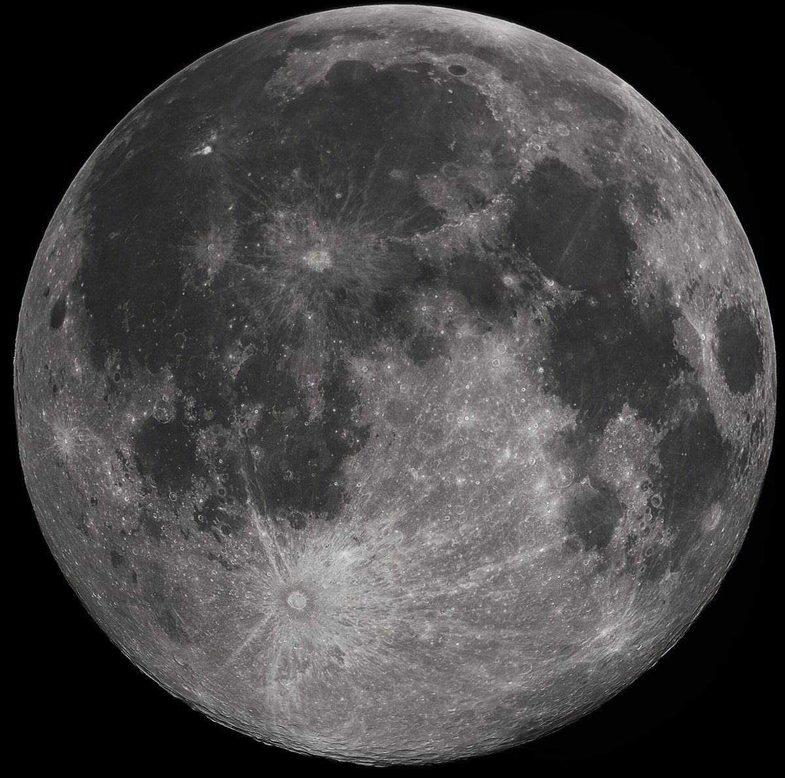
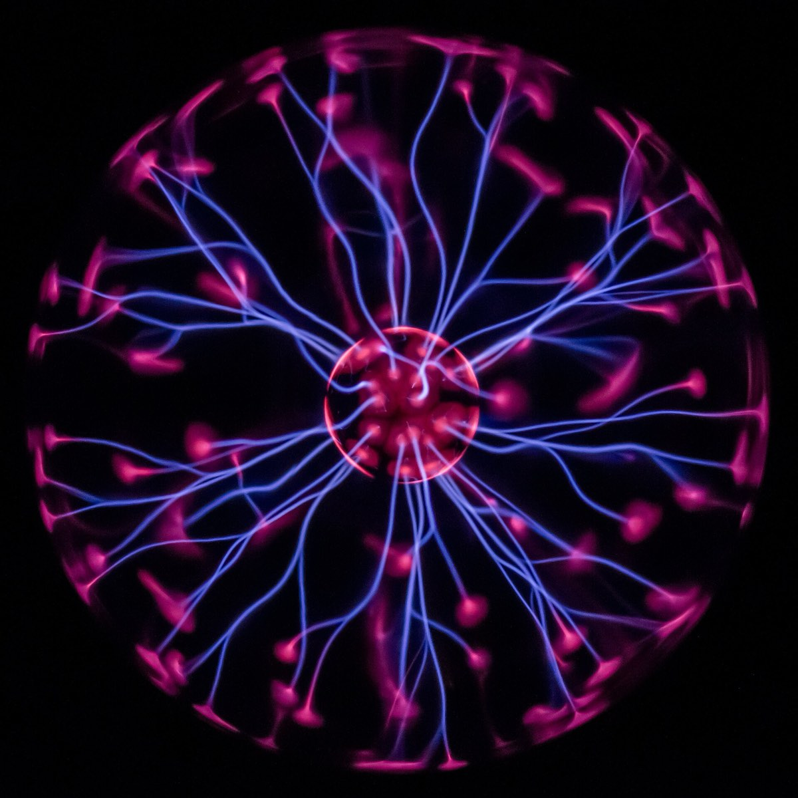
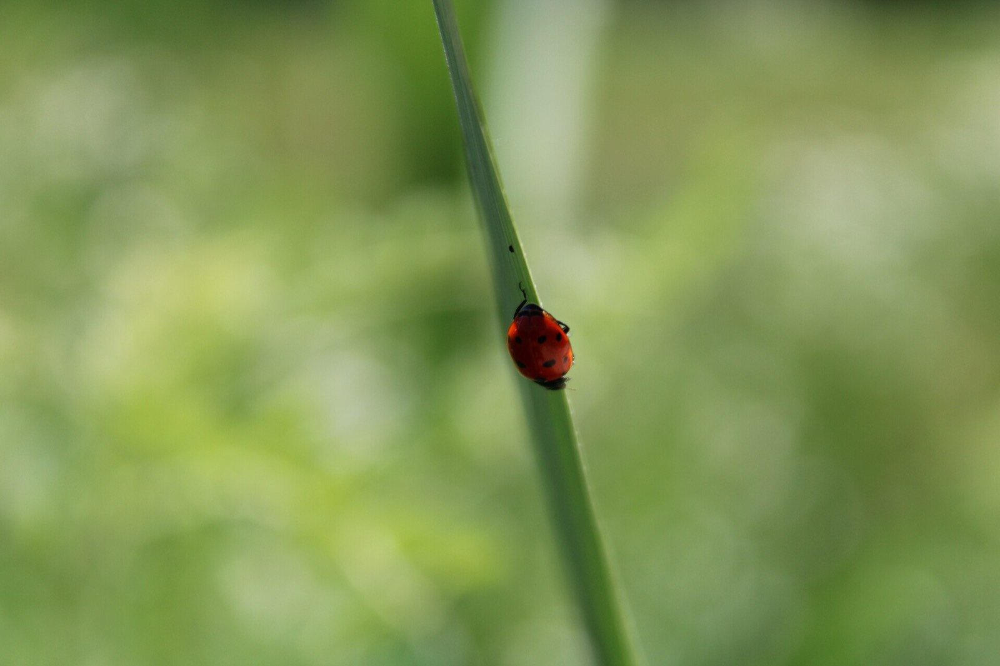
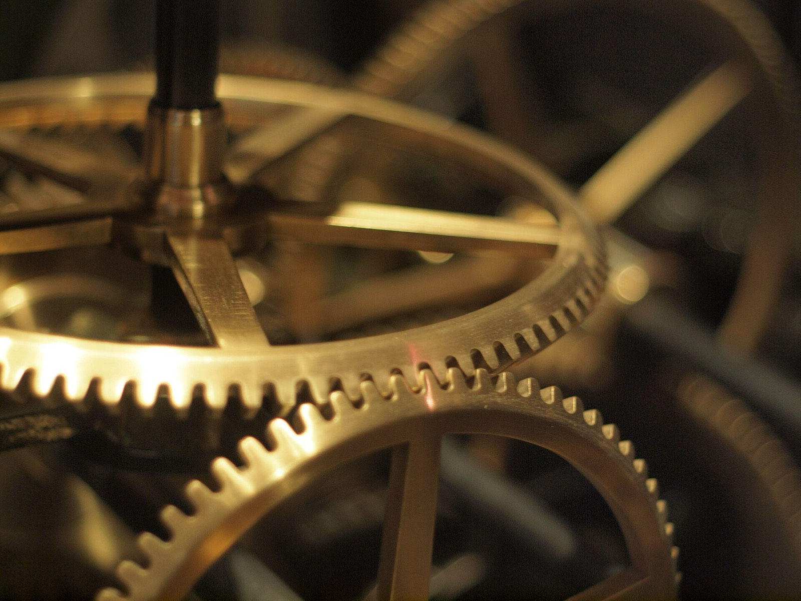

FamilyMost families pick this
£85a year
Two named adults and up to three children.
- Unlimited visits, no booking needed
- In at 9:00 on weekends, before the doors open
- 10% off birthday parties and the café
Open every day but Monday
Book ticketsWapping Wharf, Bristol harbourside
Five hands-on galleries for children aged 4 to 12, a planetarium under the dome and live shows every open day.
The building is roundThe galleries ring the Sun Hall, so every loop brings you back to the café and the toilets.
Start anywhere. Every exhibit works with small hands, and staff in blue aprons run a demo in each gallery every hour.

A planetarium under the dome, a Moon you can turn to see why it changes shape, and a launch pad where air rockets fly up into the ceiling nets.
Planetarium shows at 11:00, 13:30 and 15:30. Free with your ticket, collect a seat token at the door.
Eighteen metres of channels, locks and dams at toddler height. Waterproof smocks hang by the door and there is a warm drying room for wet sleeves.
Dam building with a member of staff at 10:30 and 14:00.

Magnets, circuits and the plasma globe everyone remembers. A hand-crank generator lights a whole street of model houses if three people turn it together.
Big Static runs 20 minutes. Ear defenders are on the hooks by the door.

Microscopes you do not have to lean over, a living ant colony behind glass, and an indoor garden where you can count the legs on everything.
The ants are fed at 14:30. It is the best time to see the whole colony move.

Ramps, pulleys and a two-storey ball run made from parts children can move. Every piece is meant to come apart and go back together a different way.
The ball run is reset to a new course every Saturday morning.
Booking online holds your entry time. Walk up if you like: we only turn people away on the busiest school holiday mornings.
Valid all day. Leave for lunch and come back.
| ChildAges 4 to 12 | £9.50 |
|---|---|
| Adult13 and over | £12.00 |
| ConcessionStudents, over 65s, carers go free | £10.00 |
| Under 4With a paying adult | Free |
| Family of fourTwo adults, two children | £38.00 |
Planetarium seats are included. Tokens are given out at the dome.
FamilyMost families pick this
£85a year
Two named adults and up to three children.
Grandparents
£70a year
Two named adults and up to four grandchildren.
Paid for by your third visitA family of four spends £38 a visit on day tickets. A Family membership costs £85 for the year.
On Gas Ferry Road, with coat racks and a lunch-box trolley per class.
One class at a time in a lab room, led by a science educator.
Galleries open to schools only until 11:30 on weekdays.
Booked for your group, 45 minutes, next to the toilets.
A 25-minute show matched to your workshop topic.
Drop-off and pick-up bay right outside the schools entrance.
Every workshop is written against the national curriculum for science and taught by people who used to teach it. Mondays in term time are for schools only.
£6.50per pupil, workshop and planetarium included.
One adult free for every 6 pupils in KS1, every 10 in KS2.
Two hours, a party host who does this every weekend, and something to take home that the birthday child made.
£16.50 a child10 to 20 children, Saturdays and Sundays at 13:00 or 15:30.
Build an air rocket from card and tape, test it on the launch pad, take it home in a tube.
Mix three kinds of slime, find out which one bounces, take a pot of the best one home.
A hunt round Tiny Worlds with magnifiers and a clipboard, then a visit to the ants.
| Monday | Schools only in term time |
|---|---|
| Tuesday | 10:00 to 17:00 |
| Wednesday | 10:00 to 17:00 |
| Thursday | 10:00 to 17:00 |
| Friday | 10:00 to 17:00 |
| Saturday | 9:30 to 18:00 |
| Sunday | 9:30 to 18:00 |
School holidays: open every day, Monday included, 9:30 to 18:00. Last entry an hour before closing.
No parking on site. Cumberland Road car park is 400 m away and costs £7 for four hours. Blue badge bays are by the schools entrance.
Step-free everywhere, with lifts to every floor and a buggy park in the Sun Hall. A quiet room sits next to Tiny Worlds, and ear defenders and ear-level maps are free to borrow.
The Sun Hall café does hot lunches from £4.50. Bring your own: the picnic room by the lockers is free and has a microwave for baby food.